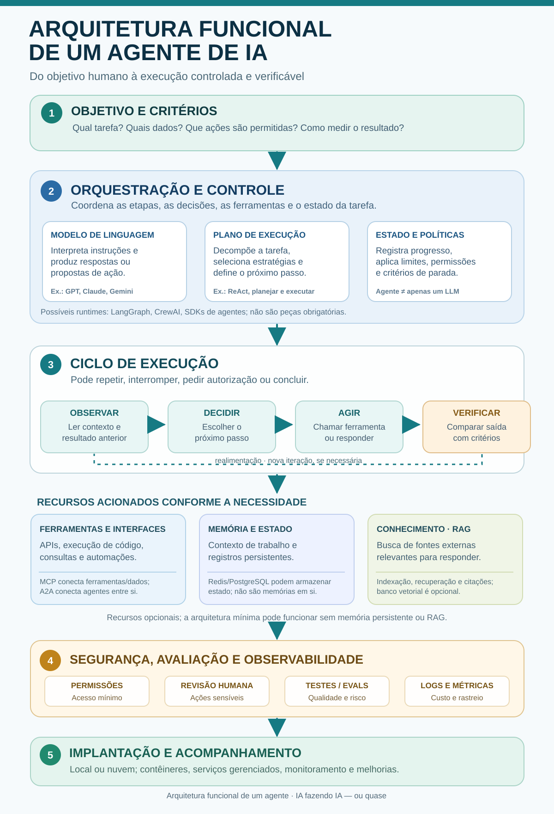
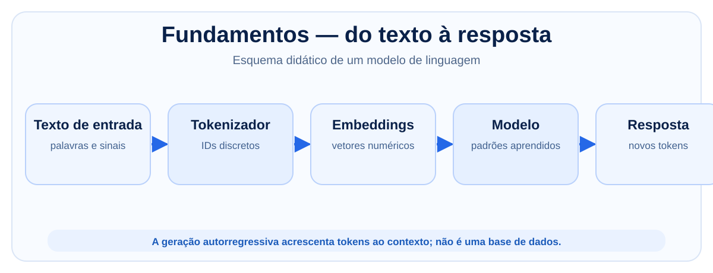
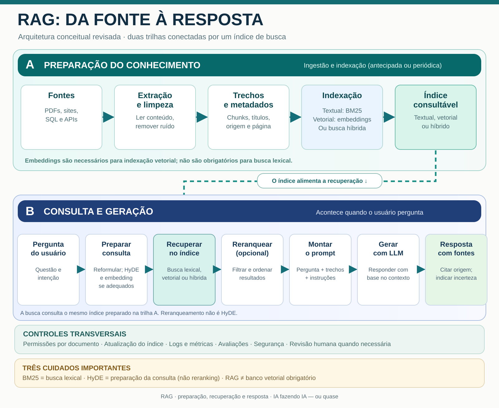
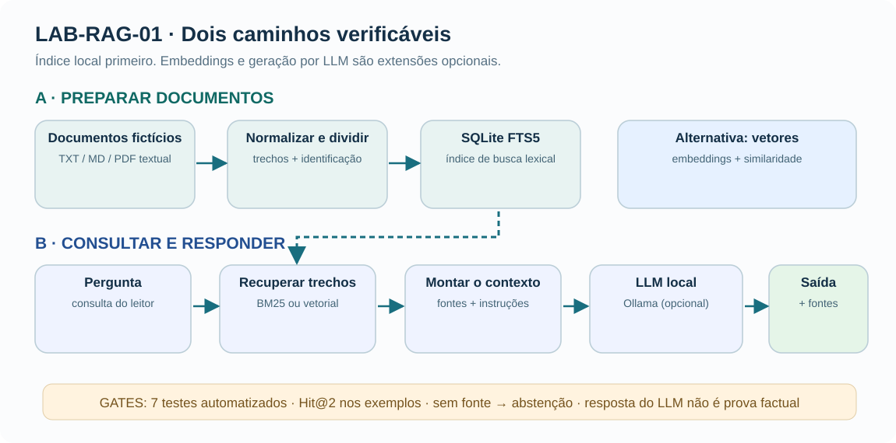

Arquitetura de um agente de IA
Objetivo, orquestração, execução, ferramentas, memória, RAG, segurança e implantação. Diagrama vetorial próprio e notas de referência.
Explorar o infográfico
40 perguntas essenciais sobre LLMs
Sete temas: fundamentos, atenção, treinamento, prompting, contexto, segurança e implantação. Respostas revisadas e ilustrações editáveis.
Ler o guia ilustrado
Arquitetura de um pipeline RAG
Preparação e indexação separadas da consulta: busca textual, vetorial ou híbrida, montagem do contexto e respostas fundamentadas. Fluxo tecnicamente revisado.
Explorar o pipeline RAG
Laboratório RAG na prática
Execução guiada com dados fictícios, caixas de comando, sete testes, recuperação local SQLite e geração opcional via Ollama.
Executar laboratório passo a passoSelecione qualquer imagem para abrir o SVG original em tamanho integral.

 02 · Transformers e atenção
02 · Transformers e atenção 03 · Prompt, RAG e ajuste fino
03 · Prompt, RAG e ajuste fino 04 · Prompts e decodificação
04 · Prompts e decodificação 05 · Contexto, tokens e custo
05 · Contexto, tokens e custo 06 · Segurança e verificação
06 · Segurança e verificação 07 · Inferência e métricas
07 · Inferência e métricasLeitura e direitos: estes diagramas foram criados para os complementos públicos, sem reproduzir as capturas recebidas. A arquitetura de agentes registra Denis Panjuta como referência temática atribuída.